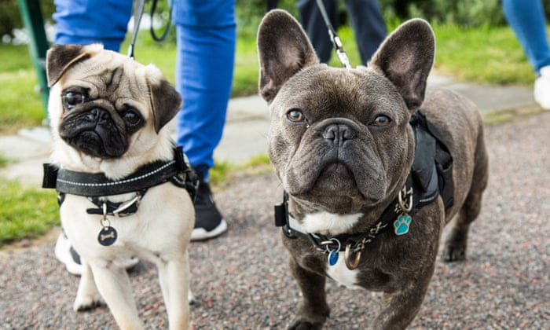
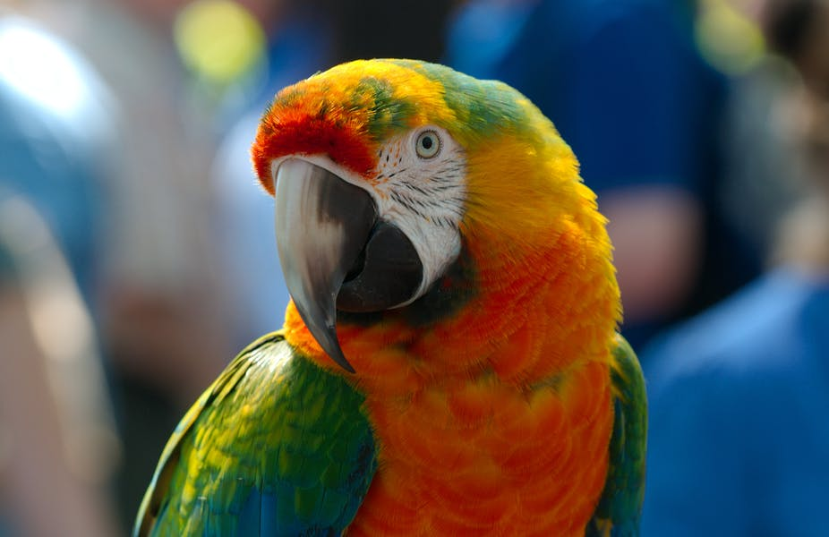
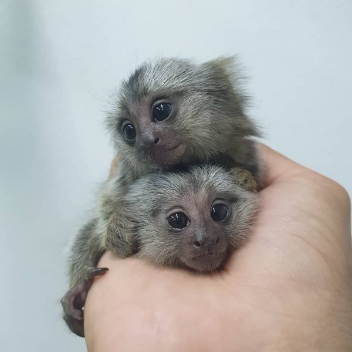

The dogs in our Shelter home are healthy and you will able to find lovable dogs. These dogs need a parent which can be you. come and get some these cute dogs .
- bulldog
- pug

- german shephard

All these can be security dogs so as to keep your home safe and are available inshelter home.
The parrot

A parrot is a special creature whereby its found to be able to immitates human's speech.They are rare. They are intresting to learn about.
The marmoset monkey

These type of monkeys are quite small with long tails.They are really cute.They have a lifespan of about 5-16 years and are quite fast
check out KSPCAKENYAits a great place to know more about pet adoption!